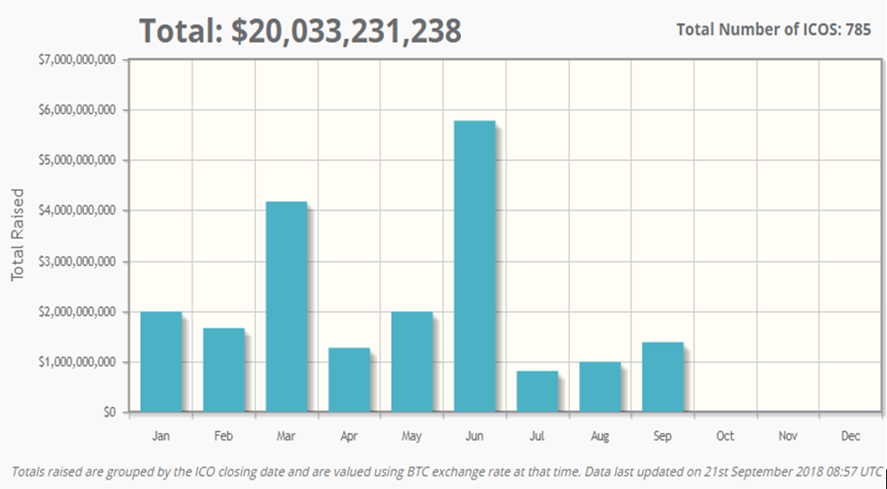

Sincerley,
The CoinPort Team
Easy, fast and safe cryptocurrency exchange
Since the first ICO conducted by Mastercoin was reported in 2013, ICOs have been perceived as the easiest way of raising millions of dollars in seconds! Today, there are almost 800 ICOs, which have raised more than $20 billion, 50% of which has been raised in 2018.
It is therefore not surprising, that speculators, investors, entrepreneurs and regulators have been attracted to this explosive form of fundraising.
There is notable application of ICOs across the board, from infrastructure to finance, communications, trading & investing payments, governance, events & entertainment, supply & logistics, gambling & betting, and drugs & healthcare, among others.
Even so, ICOs are not a bed of roses. They come with a lot of risks, especially because of inadequate regulation, compared to traditional banking and fiat currencies. In fact, 46% of ICOs launched up in 2017 were nothing but scams! Due diligence and assessment of ICOs of interest to investors should be done with absolute precision.
Normally in an initial public offerings (IPOs) before a startup or company decides to make an IPO, it normally has to provide details about its current value of its assets, what it does, how much it earns and how much it spends to potential shareholders. Investors in an IPO normally have a clear picture before deciding whether to invest. And besides, everything that happens in an IPO is regulated by law. But when it comes to an ICO, it’s not that straightforward as the regulations that govern the concept and the jurisdictions still remain unclear.
Cryptocurrencies are still in their infancy and hence rulings on them tend to be inconsistent. In 2015, the U.S. Commodity Futures Trading Commission defined Bitcoin as a security. In July 2017, the U.S. Securities and Exchange Commission defined the decentralized autonomous organization (DAO) token as a commodity. And not to mention the international nature of cryptocurrencies that make it possible for organizations to launch coins and tokens in places with lighter regulations (think Singapore).
That’s why you as an investor need to research carefully before deciding to invest in an ICO. This would go a long way in cushioning themselves against hefty losses. Remember, there are almost zero chances that invested funds could ever be recovered. Here is how to assess ICOs:
The common denominator for ICOs is their offering solutions to existing problem. From an investor’s point of view, proposed solutions must be a better alternative to existing solutions. Over and above that, the said solutions should withstand the test of time, paving way for its adoption in the coming years.
That is to say, the big catch must not be in the technology, but rather in the business idea. Without a bigger market for the product, it would be impossible to get a return on your investment. Often times, big players like banks and corporations already using an ICO network are good indicators of its adoption.
Technological jargon can be very intimidating for most investors. Of course, for some it’s simply presumption and laziness. The price paid for this is usually heavy. A simple Google search would help clarify some of the difficult concepts. Make use of this provision. Usually, the whitepaper is a sufficient tool to judge the level of professionalism attached to the project, and the attention given to details. This is where the team should display their extensive knowledge about their intended disruption in the industry.
Companies may have great ideas, but not all ideas call for blockchain solutions. The development of blockchain based projects is usually expensive. As such, no one should be needlessly intimidated through poor coding and related challenges, which can totally crash a project. The bottom line is investing in blockchain must be reasonably justifiable.
Otherwise, any cheaper alternatives should be given careful consideration. The other bite in using blockchain technology for ICOs is that government regulations is a monster that will catch up with projects sooner or later. In this regard, prevention is better than cure would be a timely incentive on legislations.
Trust is a major setback in the world of cryptocurrency. The developers, investors, and brains behind ICOs are people you might never get to meet in real life. To cater for this vacuum, their academic history and professional experience is usually placed in the whitepaper and their official website. Their broad experience would translate to a reliable network, allowing them to influence and collaborate with other stakeholders. If in doubt or something is not quite clear, you can Google the names of the team members. Find out who the advisors are.
LinkedIn accounts are professional places from which you can evaluate them – trace their pages. By all means, establish their credibility. When researching about the competence and experience of the team members, find out a list of other cryptocurrencies of projects you consider successful. An endorsement by persons like Vitalik Buterin, Ethereum’s founder, is a major boost for any project! But that’s not all: the company should establish strategic partnerships. This is critical in showing the seriousness attached to the project by outsiders.
A few weeks to the launch of ICOs, the maiden announcement is usually made on forums like BitcoinTalk.Org, where most issues related to crypto can be found. The ICOs’ thread on this forum will reveal the questions raised by other interested parties. Here, you should be able to tell whether the team takes it time when giving satisfactory answers or not.
Today, people cannot run away from online reputation, especially given that Bitcointalk shows the rank and level of activity for each thread, and the number of messages from every sender. Any negative messages could be a polite warning. If you have been following experienced writers, it would be good to see what they think.
The emphasis here is that you should try to gauge the level of openness and transparency of the particular ICO, like having a public slack for everyone involved. Other platforms you can leverage include cryptocompare, cyberfund, icobench, icocreed, reddit and telegram.
Persons already familiar with the project could help shed more light about the project. The team members running the project would seize the opportunity to give regular updates, say on a weekly basis. This could be done through YouTube videos or posts on their social media pages or website.
At the time you develop interest with an ICO, it would be prudent to take a look at their present stage of development. Essentially, a good roadmap should give detailed expectations of the project from the beginning to the end. A beta version would allow potential investors to interact with the project before making up their minds.
Whitepapers and proof of concept are good indicators of success. And because each step of the project calls for a predetermined amount of funding, token distribution should be linked to the roadmap. This is a good proof of transparency and accountability. A substantial share of the raised funds should be allocated to development related works, as opposed to bounties and founder members.

As ICOs continue to overtake traditional methods of fundraising, plenty of projects will mushroom, and investors are likely to be spoilt for choice. Only careful assessment of ICOs will help ensure that you invest in the best and legitimate ones.